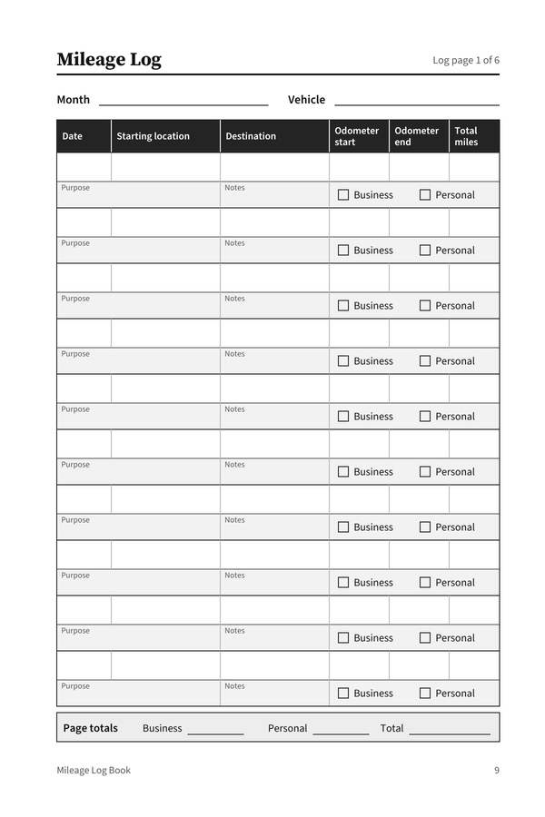
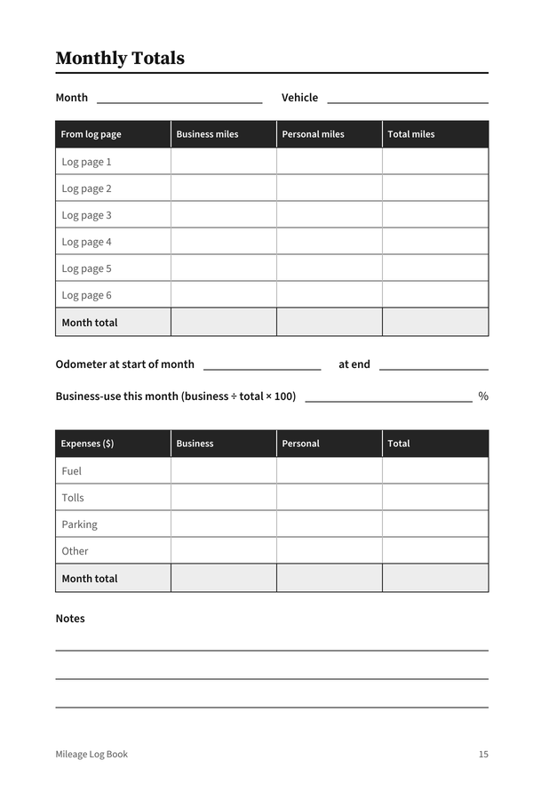
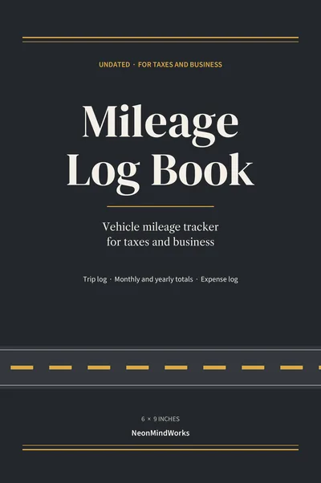

How to keep an IRS-ready mileage log in 2026
What the IRS expects a mileage log to show, which miles count, and how to handle the two business rates in 2026. Every rule links to the IRS page it comes from.
For every business trip, write down the date, where you went, why you went and the miles. Odometer readings at the start and end of each trip are the easiest way to back up the miles. Once a year, record the total miles the vehicle was driven. Write entries at or near the time. A log you fill in once a week still counts.
In 2026 the business rate is 72.5 cents a mile from January 1 to June 30 and 76 cents a mile from July 1 to December 31, so keep every trip dated and total each half of the year on its own.
The 2026 rates changed in July
The IRS set the 2026 rates in Notice 2026-10, released December 29, 2025. Then Announcement 2026-11, published in the Internal Revenue Bulletin of July 13, 2026, raised the business, medical and moving rates for miles driven on or after July 1, 2026. The IRS gave the reason as recent increases in the price of fuel. The last time the business rate changed in the middle of a year was 2022. A log that only shows a yearly total can’t be split between the two rates.
- Medical
- 20.5¢
- Military moving
- 20.5¢
- Charity
- 14¢
- Medical
- 23.5¢
- Military moving
- 23.5¢
- Charity
- 14¢
Sources: IRS standard mileage rates and IR-2025-128. The charity rate is set by law at 14 cents and did not change. The IRS says the rates apply to gasoline, diesel, hybrid and fully electric vehicles, and to a car, van, pickup or panel truck.
What a log must show
Chapter 5 of IRS Publication 463 has a table (Table 5-1) listing what you must be able to prove for each kind of expense. For car expenses it comes down to four things.
| Element | What to record |
|---|---|
| Amount | The miles for each business use and the total miles for the year. If you claim car costs, also the cost of the car and any improvements, and the date you started using it for business. |
| Time | The date you used the car. |
| Place | Your business destination. |
| Business purpose | Why you made the trip. |
Odometer readings for every trip are not on that list. Still, the sample log the IRS prints in the same chapter (Table 5-2, Daily Business Mileage and Expense Log) has columns for the date, destination, business purpose, odometer start, odometer stop, miles this trip, and expense type and amount. Start and stop readings are the simplest proof of the miles.
Three rules that make a log hold up
- Write it down, at or near the time. Pub. 463 says you must generally prepare a written record for it to be adequate, and a record kept on a computer counts. You don't have to write every trip on the same day: a log kept weekly that accounts for the week's use is a timely kept record. A record put together months later carries less weight.
- No estimates. The IRS puts it in one line:
“You can’t deduct amounts that you approximate or estimate.”
A figure like “about 400 miles a month” is the kind of estimate this rule rules out. - State the business purpose. You generally need a written statement of why you made the trip. The exception is when the purpose is clear from the circumstances, such as a salesperson driving an established sales route.
If your records are incomplete, Pub. 463 says you have to prove the missing details with your own specific statement plus other supporting evidence. For the date, place or cost, that evidence has to be direct or documentary, such as receipts, paid bills or detailed written statements from witnesses. That is a much harder way to prove a deduction than a log.
Which miles count
The rules for which trips count are in chapter 4 of Pub. 463:
- Commuting never counts. Driving between home and your main or regular place of work is personal, no matter how far it is, and even if you make business calls on the way. Parking at your regular workplace is a commuting cost too.
- A home office can change that. If your home office qualifies as your principal place of business, trips from home to another work location in the same business count. Publication 587 explains when a home office qualifies.
- No office at all? If you have no regular office and no home office, the drive to your first business stop and the drive home from your last one are commuting. The trips between stops count.
- Two jobs in one day. Driving from one workplace to the other counts. If you stop somewhere personal on the way, you can only count what a direct trip would have been.
- Temporary work locations. If you have a regular workplace, the round trip from home to a temporary work location in the same business counts, regardless of distance. Work is temporary when it is realistically expected to last, and does last, one year or less.
- Logos and signs don’t help. Putting advertising on the car doesn't turn commuting or personal driving into business use.
Employees: most employees can’t deduct unreimbursed car expenses at all. IRS Topic 510 lists the exceptions as Armed Forces reservists, qualified performing artists and fee-basis state or local government officials, and Notice 2026-10 also allows certain expenses of eligible educators. Self-employed people deduct business car costs on Schedule C. If your employer reimburses mileage under an accountable plan, it may ask you for the same kind of records.
Parking, tolls and the two methods
There are two ways to figure the deduction: the standard mileage rate, or actual expenses. The log is the base for both.
- Standard rate. Business miles times the rate. Business parking fees and tolls are deductible on top of it, so keep those receipts with the log. For that year the rate replaces your actual costs: no separate depreciation, lease payments, repairs, gas, oil, insurance or registration.
- Choosing it. For a car you own, you must use the standard rate in the first year the car is available for your business. After that you can switch between methods. For a leased car, if you use the standard rate you must use it for the whole lease, including renewals.
- When you can’t use it. Among other cases, if you use five or more cars at the same time, or you claimed a section 179 deduction, special depreciation or MACRS depreciation on the car.
- Actual expenses. You add up what the car really cost (gas, oil, repairs, tires, insurance, registration, licenses and depreciation or lease payments) and deduct the business share. The share comes from your log. Pub. 463 gives the example of 12,000 business miles out of 20,000 total, which is 60%.
Shortcuts the IRS accepts
- One line for one outing. A round trip or one stretch of uninterrupted business driving can be a single entry. A lunch stop between two business stops doesn't break it up.
- Regular routes. If you drive the same route, you can record its length once, then record the date of each trip near the time and the total miles for the year.
- Sampling. You can keep a full log for part of the year, such as the first week of every month, and use it for the whole year. The catch is that you have to show with other evidence that those weeks are representative.
- Private details. Confidential information, like a client's name, can be kept in a separate record, as long as you write it down near the time and can produce it.
A filled-in week
Here is one week of a log for a self-employed home inspector whose home office is the principal place of business. The trips and numbers are made up for this guide.
| Date | From | To | Purpose | Odometer | Miles | Type | |
|---|---|---|---|---|---|---|---|
| Start | End | ||||||
| Mon Jul 6 | Home office | 1418 Birch Ln | Pre-purchase inspection, job 071 | 49,812 | 49,826 | 14 | Business |
| Mon Jul 6 | 1418 Birch Ln | County permit office | Permit history, job 071 | 49,826 | 49,835 | 9 | Business |
| Mon Jul 6 | County permit office | Home office | Return | 49,835 | 49,851 | 16 | Business |
| Tue Jul 7 | Home | Grocery store | Personal | 49,851 | 49,857 | 6 | Personal |
| Wed Jul 8 | Home office | 77 Quarry Rd | Radon test setup, job 072 (toll $3.25) | 49,857 | 49,881 | 24 | Business |
| Wed Jul 8 | 77 Quarry Rd | Home office | Return (toll $3.25) | 49,881 | 49,905 | 24 | Business |
| Fri Jul 10 | Home office | Hardware store | Moisture meter batteries for the business | 49,905 | 49,911 | 6 | Business |
| Week totals: 93 business miles, 6 personal, 99 in all (odometer 49,812 to 49,911) | |||||||
A few things make this log easy to defend. The odometer readings chain from one line to the next with no gaps, so the 99 miles for the week match the odometer. The personal trip is logged too, which keeps the total honest. Each purpose names the job, so it can be matched to an invoice later. The two Quarry Rd trips could also be one round-trip line of 48 miles.
Worked example with the split rate
Say the same inspector's log shows these totals for 2026. Again, the numbers are only an example.
| Period | Calculation | Amount |
|---|---|---|
| Jan 1 to Jun 30 | 3,120 mi × $0.725 | $2,262.00 |
| Jul 1 to Dec 31 | 3,480 mi × $0.76 | $2,644.80 |
| Business parking and tolls | From receipts | $86.50 |
| Total | 6,600 business miles | $4,993.30 |
Using one rate for the whole year gets it wrong either way. All 6,600 miles at 72.5¢ comes to $4,785.00, which is $121.80 too low. All 6,600 at 76¢ comes to $5,016.00, which is $109.20 too high. With odometer readings of 41,250 on January 1 and 56,250 on December 31, the car was driven 15,000 miles in the year, so business use was 6,600 ÷ 15,000 = 44%.
Year-end checklist
- Odometer reading on January 1 and December 31, for the total miles the vehicle was driven in the year.
- The date you started using the vehicle for business. Schedule C asks for it.
- Business miles for January 1 to June 30 and for July 1 to December 31, added up separately.
- Commuting miles and other personal miles, kept apart from business miles. Schedule C Part IV asks for business, commuting and other miles on line 44.
- Receipts for business parking and tolls.
- If you use actual expenses: receipts for gas, repairs, tires, insurance and the rest, plus your business-use percentage.
- Schedule C lines 47a and 47b ask whether you have evidence to support the deduction and whether that evidence is written. With a log, both answers are yes.
- Keep the log and receipts at least 3 years from the date you file (a return filed early counts as filed on the due date). If you depreciate the car, keep business-use records for each year of the recovery period.
Keeping it on paper
The IRS accepts a paper log or a computer record, as long as it is written and kept on time. Paper has a few practical points in its favor: it sits in the glove box, and it doesn't depend on a phone battery or a GPS signal.
We publish a paperback for this under our NeonMindWorks name. It follows the elements above. Each trip line has the date, starting location, destination, odometer start and end, total miles, purpose, notes and a business or personal box. Each month ends with a totals page, so the January to June and July to December totals are a matter of adding six monthly pages. There is no mileage rate printed in it, because rates change, as 2026 showed. You write in the current rate.



Mileage Log Book
Room for 720 trips. Twelve undated monthly sections, quarterly totals, a yearly summary, a business-use worksheet, a vehicle expense log, and pages for up to four vehicles. 6 × 9 inch paperback, 108 pages, $9.99.
If you use the actual expense method, the receipts for repairs, oil and tires matter as much as the miles. Our Vehicle Maintenance Log Book (opens in a new tab) keeps the service history for up to four vehicles. All of our paperbacks are on the Planners page.
Sources
All checked on November 27, 2026.
- Standard mileage rates, IRS. 2026 rates for both periods and the rate history back to 2011.
- Notice 2026-10, 2026 Standard Mileage Rates, IRS (PDF). Rates from January 1, 2026, and the rules on unreimbursed employee travel.
- Announcement 2026-11, Internal Revenue Bulletin 2026-29, July 13, 2026. Revised rates from July 1, 2026.
- IR-2025-128, IRS news release, December 29, 2025. Vehicle types covered and choosing the standard rate.
- Publication 463 (2025), Travel, Gift, and Car Expenses, IRS. Chapter 4 (which trips count, car expenses) and chapter 5 (recordkeeping, Tables 5-1 and 5-2). The 2025 edition is the current one as of the check date.
- Topic no. 510, Business use of car, IRS. Who can deduct, the two methods, and where to report.
- Schedule C (Form 1040), IRS (PDF). Part IV, lines 43 to 47b.
- Publication 587, Business Use of Your Home, IRS. When a home office is a principal place of business.
This guide explains IRS rules in plain words. It is not tax or legal advice, and it doesn't cover every case. For your own return, read the IRS pages above or ask a tax professional.